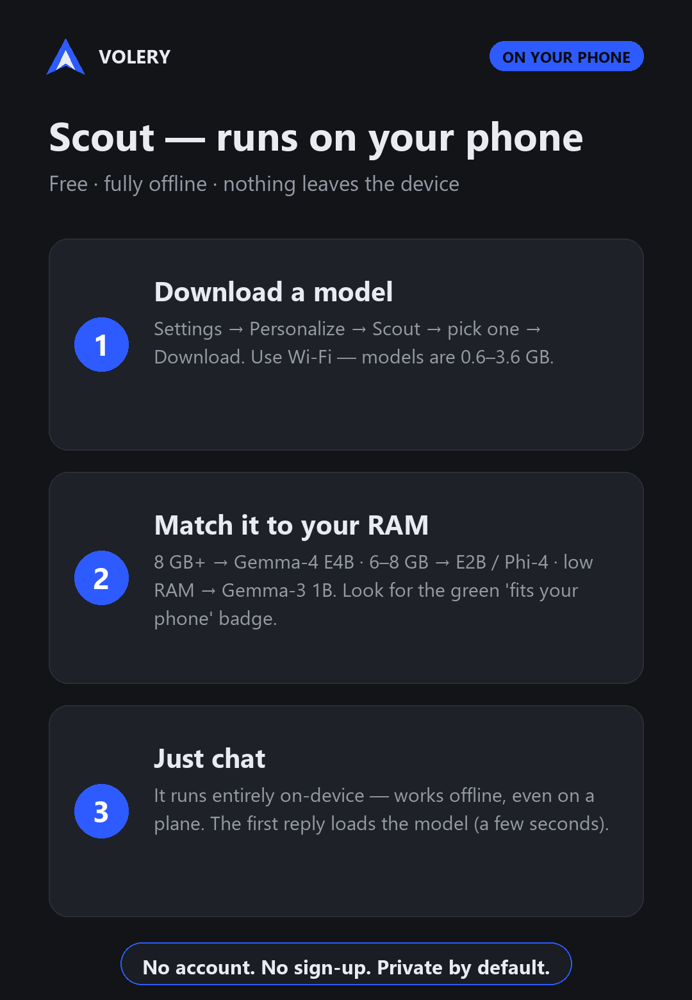
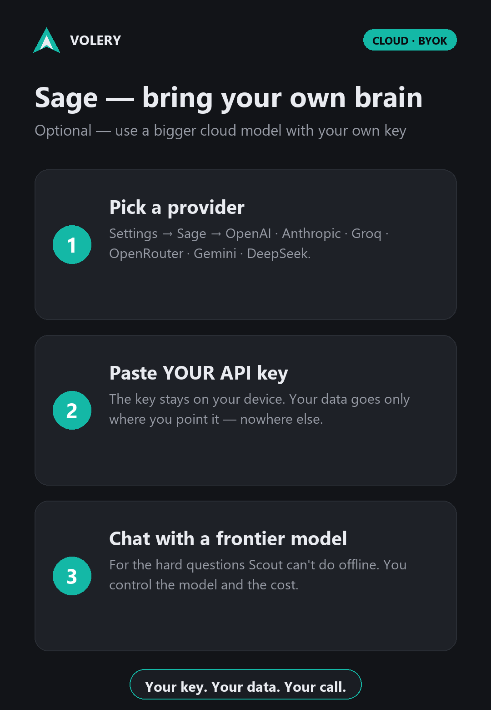

Volery runs a real AI model on your phone — private, offline, no account. This is the short path from a fresh install to your first answer.
One thing to know first: Volery ships without a model inside it (that keeps the app small). Scout can't answer until you download one — once. Most of this guide is that download. After it, Scout just works, offline, forever.
Volery works two ways — pick one, or use both. Scout runs on your phone; Sage plugs in a cloud model you bring.
Free, fully offline, private — the AI model runs entirely on your device. No account, and nothing you type leaves your phone.
See the 3 steps → Cloud · your keyOptional — bring your own cloud model (OpenAI, Anthropic, Gemini…) for the heavy lifts. Your key stays on the device.
See the 3 steps →

Scout runs the model on your device, so it needs a reasonably modern phone. You don't have to work this out yourself — Volery checks your phone and tells you exactly what it can run.
A 64-bit (arm64) Android phone on Android 8.0+, roughly 6 GB of RAM or more, and 2–4 GB free storage for the model. More RAM means bigger, smarter models — 8 GB is comfortable, 11 GB+ runs the best model on the GPU.
In Settings ▸ Scout, the “This device” card gives a plain verdict for your phone — and every model in the list gets a fit badge calculated for your RAM. On a smaller phone you can still use Sage, a cloud model you bring.
A short welcome tour introduces the flock — 🐦 Scout (on your phone), ☁️ Sage (a cloud model you bring), and the privacy promise. Tap through it or Skip. You land in the chat on the Scout lane.
Type a message now and Scout will say it can't start yet — that's expected. It needs a model. Let's get one.
| Model | Size | Good for | Sees images | Fits a phone with |
|---|---|---|---|---|
| Gemma‑4 E4B | 3.4 GB | Best quality — the default | yes | 11 GB+ RAM |
| Gemma‑4 E2B | 2.4 GB | Lighter, still sees images | yes | 7 GB+ RAM |
| Phi‑4 mini | 3.6 GB | Strongest reasoning | text only | 7 GB+ RAM |
| Qwen2.5 1.5B | 1.5 GB | Compact all‑rounder | text only | 5–6 GB RAM |
| Gemma 3 1B | 0.6 GB | Fastest, lowest RAM | text only | 5–6 GB RAM |
Not sure? Trust the ✅/⚠️/❌ badge next to each model — it's worked out for your phone. Want Scout to understand photos and screenshots? Pick a Gemma‑4 model.
Back in the chat, type anything — or tap a starter like “Explain like I'm five.” The first message loads the model into memory; after that, replies are quick.
🎉 That's Scout. It's now running entirely on your phone — turn off Wi‑Fi and mobile data and it still answers. No account, nothing sent anywhere.
Switch between them with the chips at the top of the chat. Keep all three set up and pick per message.
Free, offline, private, no account. Runs the model you downloaded. Always there. Start here.
Want a bigger brain? Plug in your own provider — OpenAI, Claude, Groq, Gemini, or your own computer. Your key, your data path.
Memory and tools on your own server. For the sideloaded owner build — hidden on the Play version.
Turn tools on from the chat's tool tray. Scout handles them on the phone — and anything that acts is pre‑filled for you to confirm, never sent on its own.
Hold to record a lecture or meeting; Scout turns the transcript into a clean, structured report — on your phone. Or just tap the mic to dictate a message.
Add connector tools when you want them: Wikipedia, read‑a‑link and crypto need no key; web search, weather and news take a free key you paste in.
Rename Scout, give it a persona and an “about you”, switch theme and accent, pick an appearance preset, text size and font. It answers the way you like.
Private by design. Scout runs 100% on your phone; your messages and your tools' data — calendar, contacts, location, notes, voice — stay on the device. The only thing that ever leaves is what you explicitly send to your own Sage provider.